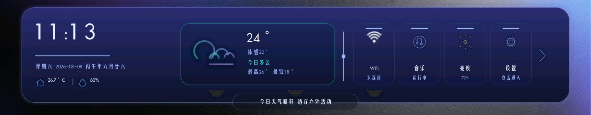
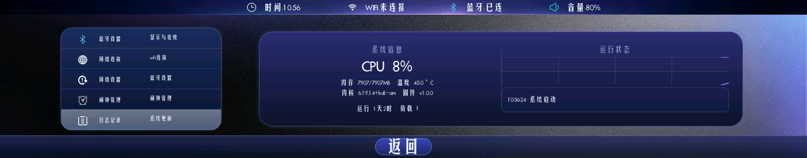
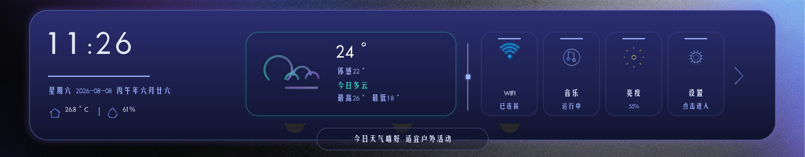

一块 1424×280 的超宽横屏 — 玻璃拟态 · 农历时钟 · 天气卡片



这块屏是从"想要一条桌面信息栏"开始做的,下面这几步决定了它长成什么样
桌面上的方块屏早就看腻了,我想做的是显示器底座下面的那一条 —— 1424×280,约 5:1 的超宽比例。时间、农历、天气、系统状态排成一行,抬头扫一眼就全知道了,不占桌面也不挡视线。
低价位的国产双核 A7,但它自带显示控制器和 G2D 2D 硬件加速,跑 Linux 画 UI 完全够用。系统用 Tina Linux,启动快、接口齐,做这种信息屏没必要上更强的平台。
内核的 framebuffer 是 720×1424 竖屏,面板却是横着装,差 90°。一开始想直接改 fb 分辨率迁就面板,结果 line_length 对不上,画面全乱。最后决定不动内核:由 G2D 硬件旋转 90° 搬运到面板。显示转了,触摸坐标也得跟着转 —— 两者是一套互逆变换,只做一半,屏幕就点不准。
先用 x86 + SDL2 模拟器迭代 UI,能自动化点击测试,改完立即看效果;再部署到 T113 真机。图片走运行时解码,换图不用重编译,直接替换板子上的文件就行。
界面一度只有 1fps,排查到最后是三个原因叠一起:LVGL 自带的 FPS 监控器自己在拖慢帧率、图片缓存没开导致每帧重新解码 PNG、还有调试代码残留。缓存开到位后,全屏背景图首帧解码 432ms,之后每帧 5ms 以内。
WiFi 用 wpa_supplicant 连上路由器,板端跑一个 WebSocket agent,经公网服务器中继,浏览器里打开网页就能远程调音量、亮度、设闹钟,还能看 CPU/内存实时曲线。闹钟到点由板上的 LM4871 功放推喇叭响铃。
全板 100 多个元件,下面这几个是选型时纠结最多的
板上一共 4 颗,把 5V 输入降到各条电压轨(3.3V / 1.8V / 内核 1.1V 等)。选它主要是三点:1A 输出对这块板的所有负载都够;SOT-23-5 小封装,layout 不占地方;外围只要一个电感加两个电容,还自带过流保护和打嗝限流。4 颗用同一型号,贴片备料也省事。
系统的"硬盘",T113 从它启动 Tina Linux。选 SLC 而不是 MLC 或 eMMC:单颗价格低、寿命长,掉电不容易坏数据,1Gb 装系统、应用和资源文件绰绰有余。Quad SPI 接口 104MHz 时钟,启动和读资源的速度都够。
屏幕背光串的 LED 压降比 3.3V 高,所以用升压拓扑,3~24V 宽输入,1.2MHz 开关频率 —— 频率够高,不会在音频段产生可闻噪声。支持 PWM 和模拟两种调光:网页上拖亮度滑块,最终就是写到内核 backlight 节点,再由它做 PWM 调光,过压过流过温保护齐全。
闹钟和提示音的"嗓子"。BTL 桥式功放,5V 供电下 4Ω 负载能出 3W,桌面提示音绰绰有余。最关键的是外围极简:不需要输出耦合电容、不需要自举电容,一个芯片加几个小电容就能出声,对小板的 layout 非常友好。
WiFi 天线。2.4G 频段 110MHz 带宽,1~13 信道全覆盖,0.5dBi 增益桌面环境够用。选贴片式而不是外置棒状天线:省掉馈线和接插件,板面干净,外壳也好设计。天线周围还摆了 ESD 保护和磁珠滤波,减少对电源的干扰。
桌面屏最主要的功能是看时间,这颗晶振就是时间的源头。32.768kHz 是标准 RTC 频率 —— 32768 = 2¹⁵,计数器一除正好得到 1Hz 秒信号,而且功耗极低。旁边那颗 24MHz 给 SoC 做主时钟,一个管秒、一个管跑系统,分工明确。
从驱动到页面都是自己写的,这里挑几个能直接玩的
深蓝渐变面板 + 半透明玻璃卡片 + 青色发光描边,整套组件库自己写的,没有第三方 UI 依赖。
LVGL v9.6内嵌 1900–2100 年农历年表,公历 / 农历 / 天干地支一起显示,每秒走时,跨天自动重算。
农历年表移植 wpa_manager 驱动,设置页扫码连路由、状态实时回传 —— 是真的能连上路由器,不是摆样子。
wpa_supplicant动态温湿度展示,10s 定时刷新,图标用 PIL 程序化生成 — 月亮、云朵,还带发光描边。
动态数据1424×280 约 5:1 的比例,四区块布局、独立 screen 互切,按这个比例做的排版在这条屏上才成立。
5:1 宽高比板端 WebSocket agent + 公网中继,浏览器打开控制面板:音量、亮度、闹钟,加 CPU/内存实时曲线。
WebSocket同一套代码:x86 Linux 模拟器快速迭代 + T113-S3 真机部署,adb 抓帧验证渲染结果。
T113-S3本页由 Python Flask 提供 — 下方数据来自真实的后端接口
loading…